|
|
HELP FIND THE FOLLOWING LOCATIONS
PAGE 89
DANGER MAN: The Man on the Beach (Peter Yates: September 1965)Hotel Hilton Istanbul Bosphorous, Turkey: The Royal Jamaican Hotel swimming pool where Drake is working undercover.
(Identified by Geoff Dodd, January 2022)
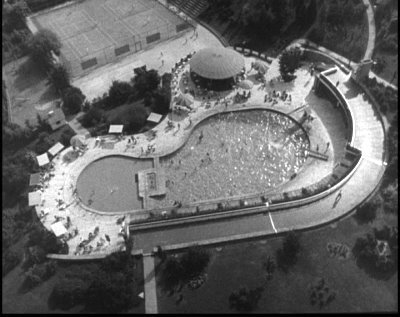
Unknowns 1 - Shots of The Royal Jamaican Hotel where Drake is working undercover

Unknowns 3 to 4 - Establishing shots of Jamaica.


Unknown 5 – Drake flies around the islands looking for suspicious activities and intent on a meeting with Sir Alan Gross.
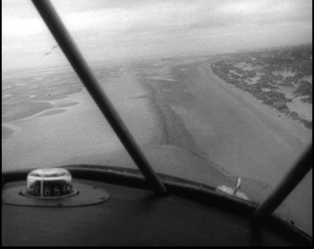
Unknown 6 – Drake goes to the Kilrush holiday home looking for Sir Alan Gross.
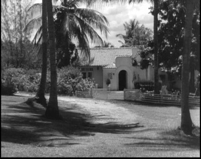
Unknown 7 – Drake looks out to sea from Native hut near the Kilrush residence.
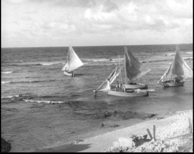
Unknown 8 – Drake goes to Fern Gulley looking for Sir Alan Gross.

DANGER MAN: Someone is Liable to Get Hurt (Michael Truman: October 1965)
Plaza de la Independencia/Plaza Grande, Quito, Ecuador – Drake travels to South American country to expose plans of Doctor Sawari.
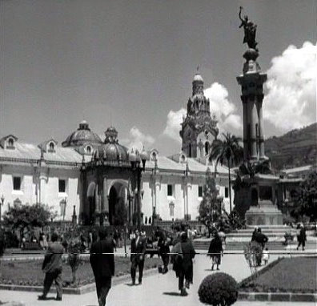
\Unknown 1 – Drake goes to the home of Dr. Sawari posing as a newspaper man. He finds the Doctor playing tennis.
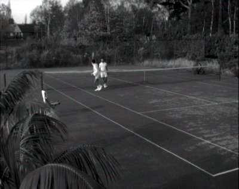
Unknown 2 – Drake is driven off to a helicopter by Fortiuato.
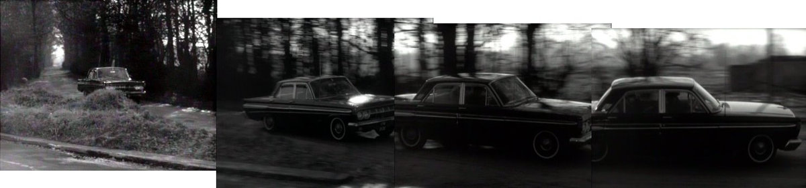
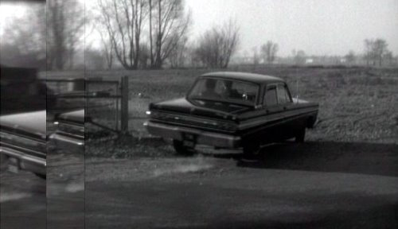
DANGER MAN: The Man Who Wouldn’t Talk (Michael Truman: September 1965)
Amsterdam Airport Schiphol, Haarlemmermeer, Netherlands – Drake arrives at Istanbul Airport


Hotel Richemond, Rue Adhémar-Fabri, Geneva, Switzerland – Drakes Hotel in Sofia
(Identified by Paul Stroud, October 2014)

Unknown 2 – Drake tries to sneak back into his hotel up the fire escape, but is observed by a cleaner in an office block opposite.
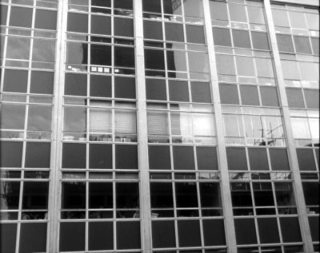
Unknown 3 – Drake engineers the escape of Meredith from Drake’s hotel in an ambulance. Drake follows the ambulance in a police car.
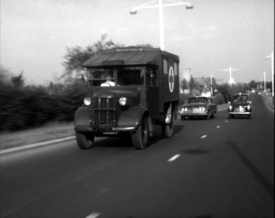
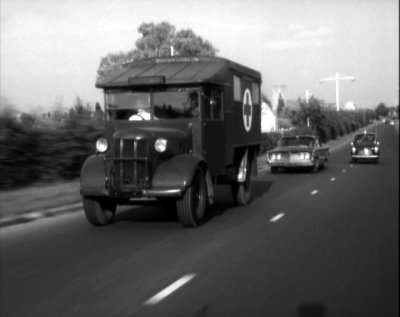
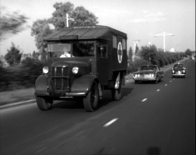
DANGER MAN: Dangerous Secret (Stuart Burge: November 1965)
Unknown 1 – Barham yacht Club – Fenton (Derek Francis) and Drake (Patrick McGoohan) go to Barham to look for Colin Ashby
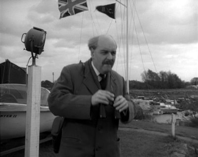
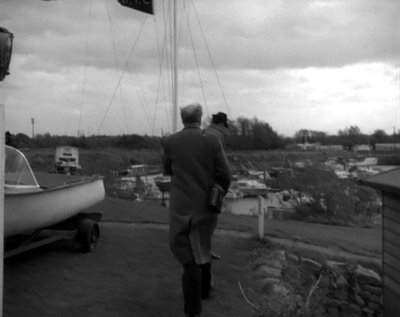
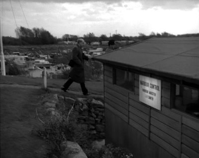
Mallaig, Highland, Scotland – Barham Harbour.
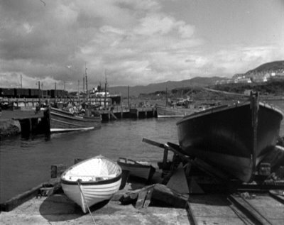
Unknowns 2 – Barham Harbour.
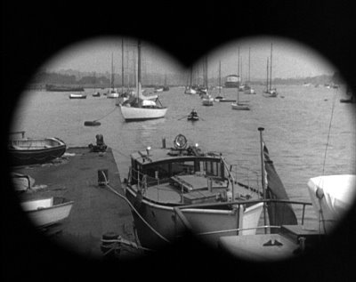
Cathédrale Saint-Etienne, Pl. Jean Jacques Chapou, Cahors, France – Establishing shot for antiques shop M. Barbier.
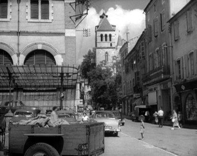
Think you know a spot? Need a bigger image? Email me.
< Previous | Index | Avengerland | Next >
Copyright © 2021 Anthony R. McKay